Why are YouTube Tags Important?
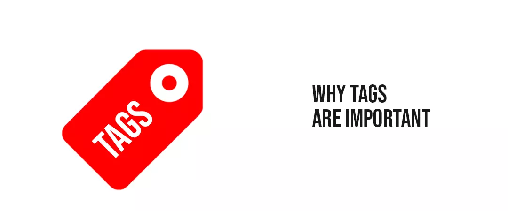
YouTube tags are used to assist YT to understand the content and context of your video. This allows this platform to recognize the topic and genre of your video and correlate it with comparable material, thereby expanding its exposure. Although the emergence of semantic search has made this platform tags less significant over time, you may still utilize them to your advantage.
Even while YT considers the title, thumbnail, and description to be more significant for video SEO, studies show that there is a modest positive correlation with ranking when you add tags to YouTube video. It's not a deal-breaker if you don't utilize them, but they can surely assist.
They're particularly more crucial if your target term is often misspelled because you may tag misspellings without mentioning them in your title or description. If you conduct self-reference tagging, YouTube tags can also help you organize and discover your own information as a side benefit.
Best Practices for YouTube channel tags
To raise your YT audience and raise your channel's popularity, try the following best practices:
Pay close attention to the keyword you want to target
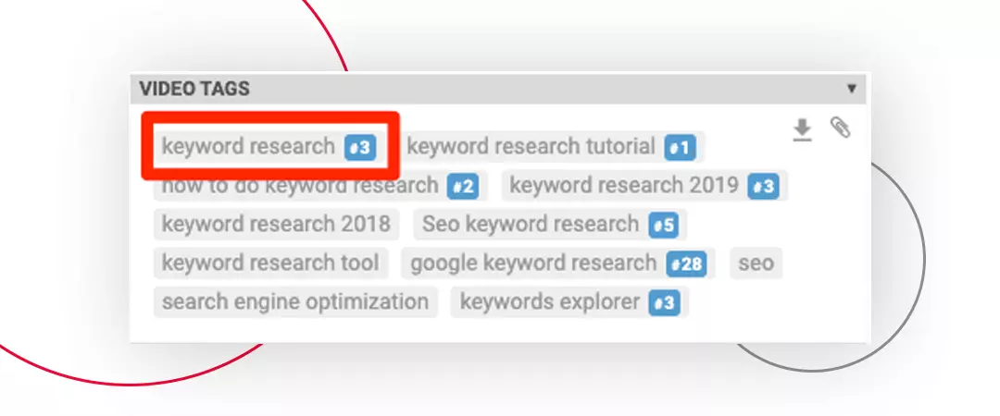
First and foremost, incorporating your goal term in the title of your YT video may help you get top rankings for that phrase. As a result, make sure the initial tag on the video you post is exactly what you're looking for and what you want the viewers to view. Limiting the target keyword to 60 characters is also an excellent technique to prevent having it cut off in the result pages. Crisp YouTube meta tags help your followers keep track of your postings and make them more clickable.
Use Broad Keywords that Relate to your Video's Topic
As YouTube tags, a few general keywords are beneficial. These keywords help the platform classify your video by defining the main theme. If you wish to publish a video on "How to Play a Guitar," for example, you may use the hashtag "guitar" as a wide hashtag. This allows the platform to recognize that your video is about a guitar. You could also try to rank for comparable keywords if you want to grow your genuine YT followers. Long-tail YouTube keywords (those with three or more words) might generate a lot of leads for your company or business. Long-tail keywords, like other social media networks, produce superior results in most SEO initiatives.
Don't Overdo it with the Tags
Tags are used to assist the algorithm figure out what your video is about so that it can show it to people who are seeking videos like yours. Using too many keywords might make it difficult to understand what your film is about. According to research, the ideal amount of YouTube tags is between 31 and 40. (When used correctly, of course). Their authority is diluted if they go beyond that.
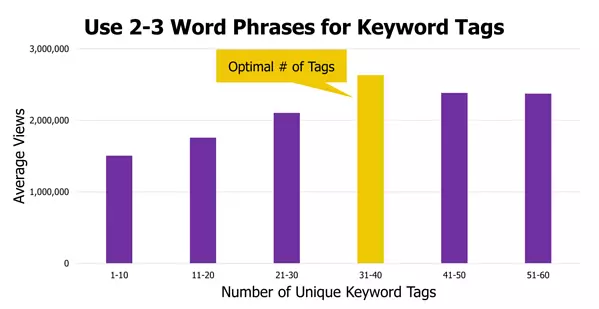
Learn from the Industries Finest
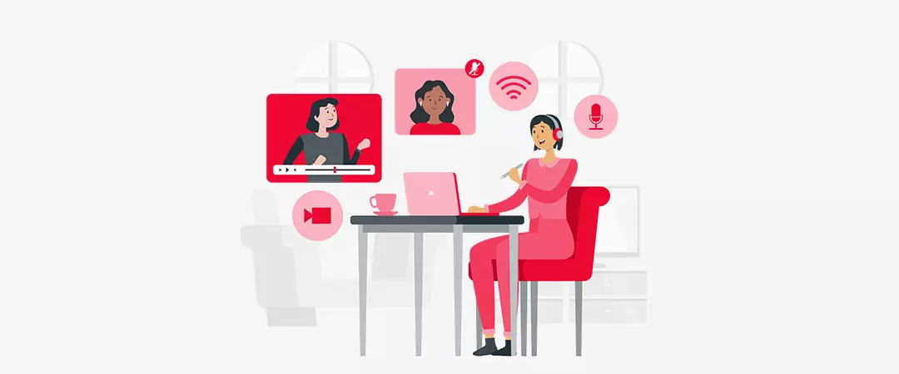
Don't know where to start using YouTube tags? Looking at your competitor's channel and studying the hashtags they use might be a smart place to start. You can figure out which keywords/hashtags are popular, which ones work, and which ones aren't.
Not all hashtags are created equal, and not all hashtags will precisely coincide with your final objective. When considering YouTube tags, you may do a fast check to see what type of material comes up. Consider how it will work with the material you're producing to attract more YT viewers, and then choose the ones that will work best as if used correctly it can reach more to the age group between 18-24 than any network on TV.
Take a Cue from Auto-Suggest
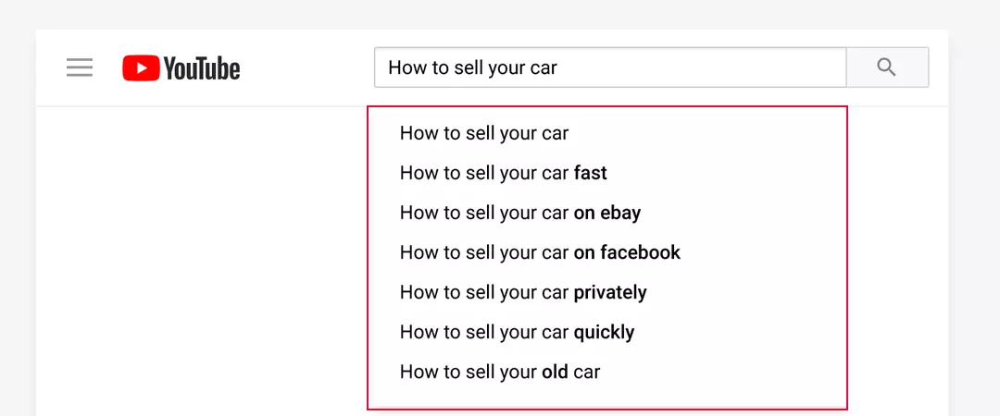
Remember how when you start typing in the YT search field, auto-suggest appears? That is your source of inspiration. When it comes to keywords, there is no better choice than YT itself to point you in the proper way.
Simply begin entering your search phrase, and you will be shown with most popular search phrases relating to that topic as typed by the audience. When you understand what most people look for online, it's much easier to choose the ideal keyword or YouTube tags for your company. If you provide piano lessons online, for example, you may input "how to play the piano" and the auto-suggest feature will present you with a list of keywords from which to pick.
Tips and Tricks for YouTube Channel Tags
While developing your YouTube marketing plan, we've identified some crucial tips and tactics for making the most of your YouTube tags or tags to use on YouTube video:
Use Different keyword Variants
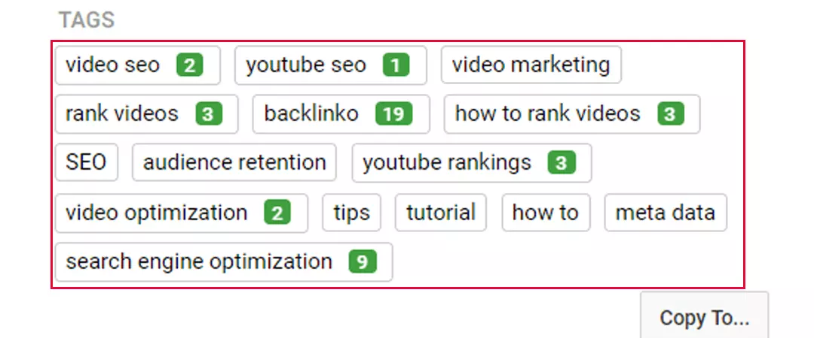
In order to select the perfect video, your viewer may change the order of the keywords. They could enter ‘boil pasta for how long' instead of ‘how long to boil pasta.' This necessitates the consideration of keyword variants. As a consequence, your video appears in the search results no matter what the viewer types in the search field which leads to a greater chance of increased views as an average user of YouTube visits around 8-9 channels every day.
Keywords Should be Written in Both Single and Plural Forms
It's a good idea to use both the single and plural variants of your target keywords so that you show up in both types of searches. You don't want to miss out on possible views because you only used one of the options to promote your video. Assume someone was seeking information on how to fix a flat tire. Both the terms "change flat tires" and "how to change a flat tire" can be used in your YouTube tags.
Make your Own Hashtags
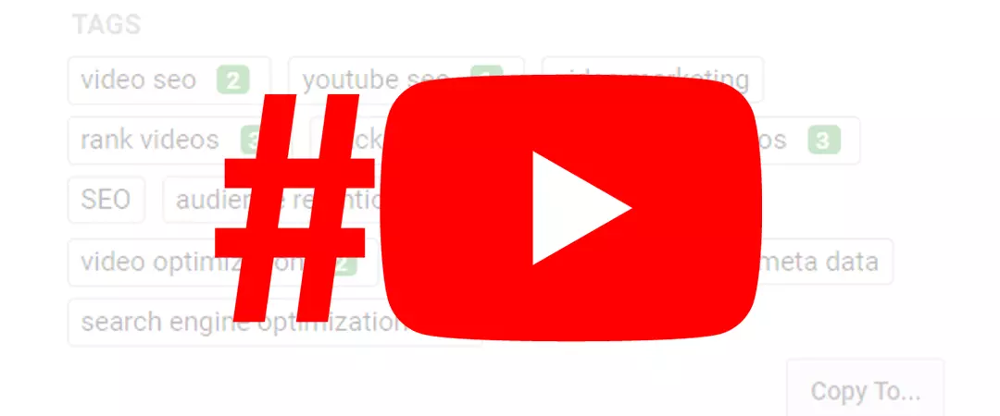
You're probably aware that YouTube tags maybe a rabbit hole. If they click a hashtag and locate a better video that delivers them what they want, they might pull your audience away from your video. This is why it's a good idea to build your own branding hashtags that solely link to your YT channel's content. For example, #AskGaryVee or #TheRanveerShow are wonderful YouTube tags example that links to further videos from the same channel when the viewer clicks on them.
To Rename your File, Use a Target Keyword
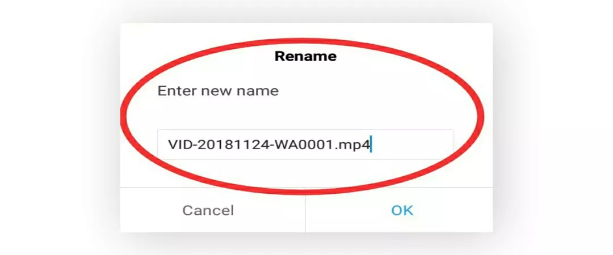
We may have an issue if the file name of your material before submitting it to YT looks like this: business ad 025FINAL.mov. The crawlers on this platform will not be in the capacity to physically view the content of your video in order to associate the desired keywords or YouTube tags with it. When you submit your video, though, it may ‘read' the filename. If your keyword is "home cleaning tips," the file name of your YT video should reflect that.
Best YouTube Tag Generator
Here are three of the greatest YouTube Tag Generators to attempt if you want to find the keywords you may tag in your videos to help them rank better in YouTube's search results.
Keywordtool.io
Keywordtool.io will offer you with best keywords for YouTube from its popular YouTube tags list, their search volume, how they've trended over the last 12 months, and questions, prepositions, and hashtags that incorporate your target term when you enter it into its YT search box.
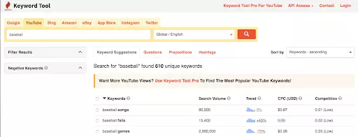
Rapidtags
Rapid tags will produce a number of related tags to use on YouTube videos when you enter a seed term and press the button. Best of all, there's a copy button so you can quickly copy the text without having to manually type it in.
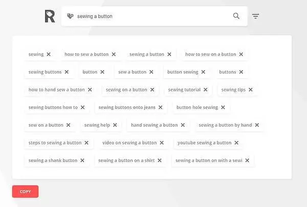
Keyword keg
You may use Keyword Keg to find out the search volume, cost-per-click, competition, off-page difficulty, on-page difficulty, SEO difficulty, trends, and suggested keywords, etc., for your target keyword. You may also use the country and language filters to narrow down your results for best tags for YouTube video.
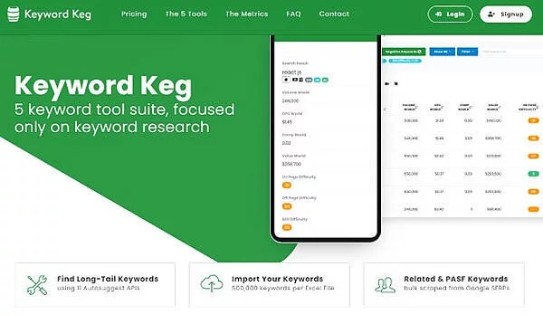
More content than ever before is available on the internet- in one minute over 500 hours of new content is uploaded Unfortunately, this implies that no matter how wonderful your material is, if you don't advertise it effectively, it won't be effective. YouTube tags are a fantastic method to market your channel, generate traffic, and grow your audience. By letting more people see your videos in the proper search results, using the proper YouTube tags may help you rank higher. However, don't go overboard with hashtags; keep them inside the character limit and make sure they're relevant to the business.
You're well on your way to having your material noticed on YT with these tools and kinds for producing effective YouTube tags for SEO. Continue to optimize other aspects of the video while keeping an eye on your channel's progress.
Feel free to share the results!